Creating a note
You should already have a 3d model that you're going to use for your note. For this tutorial I'm going to be using a simple triangle mesh I made in blender. Go ahead and import your model into the project.
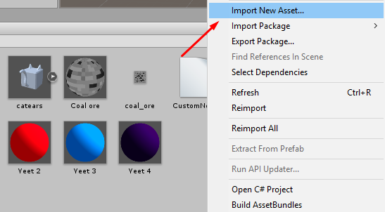
Once you've imported your model, create a new empty GameObject in the hierarchy view and name it whatever you plan on naming your note. I'll be naming mine TriangleNote.
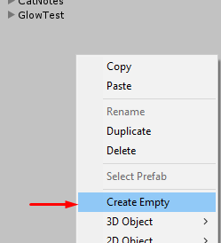
In your note's GameObject, click Add Component and add a NoteDescriptor. Don't worry about changing any of the options in the NoteDescriptor right now, we'll do that later.
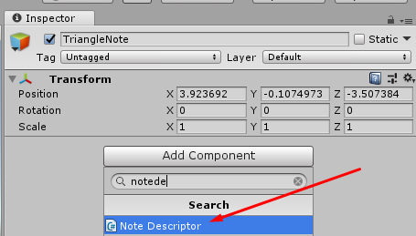
Now we can go ahead and start adding children to our custom note's main GameObject. NoteLeft and NoteRight are the two required notes, but you can also add a NoteDotRight, NoteDotLeft, or NoteBomb to your main GameObject. For the purposes of this tutorial I'm only going to be making a NoteLeft and NoteRight.
Go ahead and create a new empty GameObject inside of your main GameObject and name it NoteLeft.
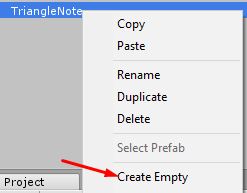
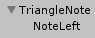
NoteLeft will serve as a kind of "container" for all of the GameObjects that contain meshes in our note. We'll be able to position and rotate our meshes freely if we put them in a seperate GameObject inside of NoteLeft, which we would not be able to do if we simply added mesh components directly to the NoteLeft GameObject.
Go ahead and drag and drop your imported mesh onto NoteLeft in the hierarchy view.

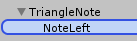
You should now have your a child GameObject of NoteLeft containing your mesh. Depending on what modeling program you used, you may need to remove some non-mesh objects. If you see any objects in your mesh named Camera or Lamp, MAKE SURE YOU DELETE THEM! If you see a warning about "breaking the prefab instance", press "Continue".
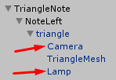
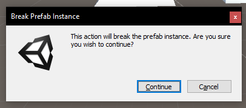
Click on the object you just added and make sure that it has a position of (0,0,0)
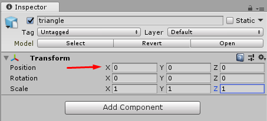
Once you've selected the mesh you need to properly scale it to be the size of an note in-game. Select NoteLeft and move it near the TemplateNoteSize. The TemplateNoteSize should be the white square in your project.
Warning: Make sure you select NoteLeft when you're moving your note. If you accidentally move the children of NoteLeft instead, the meshes will not be aligned! The meshes inside of NoteLeft should almost ALWAYS be at position (0,0,0) unless you're purposefully adjusting them.
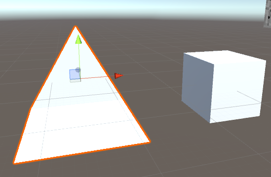
Once you've moved NoteLeft to be near the TemplateNoteSize, select the scale tool near the top left of the screen.
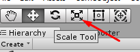
With the GameObject inside of NoteLeft selected, click and drag on the gray square and move your mouse until your note is roughly the same size as the TemplateNoteSize.
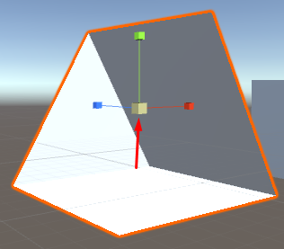
Warning: Make sure you're adjusting the scale of the objects INSIDE of NoteLeft. NoteLeft will always have a forced scale of one, so if you set its scale to anything other than (1,1,1) your model will look different in-game!
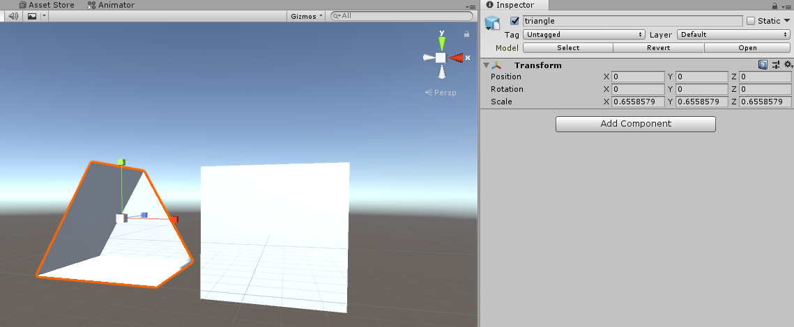
As you can see, the scale that worked for my mesh is about (0.65,0.65,0.65). This value will probably be different depending on what mesh you're using. If you can't get the mesh to be exactly the same size as the TemplateNoteSize don't worry too much because it doesn't need to be exact. Keep in mind that having a note be slightly too large is generally better than having it be slightly too small.
Warning: Make sure your notes are facing the correct direction. Look at the direction all of the other notes in the scene and ensure that your meshes are facing the same way. REMEMBER: The NoteLeft GameObject should always have a rotation of (0,0,0). If you need to rotate your note, don't rotate NoteLeft, but instead rotate the meshes inside of it!